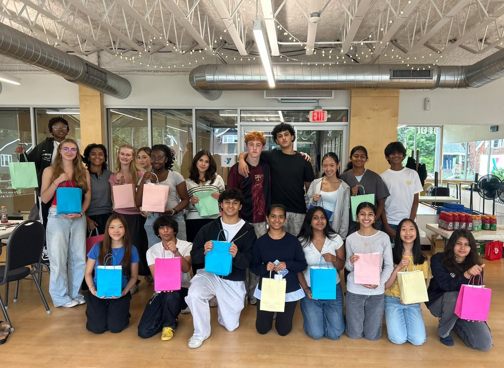

Non-Small Cell Lung Cancer (NSCLC)
The most common form of lung cancer, making up 80 to 85% of cases. How NSCLC develops, how it is diagnosed and treated, and where precision medicine is taking care.

Peer-reviewed research on wildfire smoke exposure and lung disease, translated by our student research team.
The most common form of lung cancer, making up 80 to 85% of cases. How NSCLC develops, how it is diagnosed and treated, and where precision medicine is taking care.
A fast-growing cancer behind 10 to 15% of lung cancer cases. Why early detection matters so much for SCLC, and the treatments improving survival.
From AI-assisted scans to robotic procedures, the tools helping doctors find lung cancer earlier and treat it more precisely.
A review of mesenchymal and induced pluripotent stem cells as a way to repair, not just slow, idiopathic pulmonary fibrosis, and the safety risks still in the way.
Bioengineered lungs built on decellularized scaffolds could ease the donor shortage. A review of the matrix damage, barrier failures and bioreactor challenges still to solve.
In most adult cases of PAP, rogue antibodies block the GM-CSF signal that keeps air sacs clear. How that works, and how inhaled GM-CSF compares with whole-lung lavage.
A rare inherited disorder stops the tiny hairs that clear our airways from working. The genetics of PCD, its long-term effects, and how it is treated.
Lungs and forests share the same branching design, and smoke damages both. What that comparison reveals, and what we can do to protect each.
Smoke is not the only threat to our lungs. How psychological stress travels from brain to lungs through the vagus nerve and stress hormones.
Children breathe faster and their lungs are still growing. How fine particles, nitrogen dioxide and ozone affect developing lungs, and who is most at risk.
It is the bacteria, not the body, that become resistant. How resistance develops, why it is spreading, and what it means for everyday infections.
Teens need eight to ten hours of sleep, and many get far less. What recent studies show about sleep loss, memory, attention and long-term health.
Science can map which neurons fire when we see red, but not why red looks red. A look at the evidence, two leading theories, and the question still open.
Pulmonary fibrosis slowly scars and stiffens the lungs. Here's how the disease works, why treatment options stayed so limited for so long, and what the first new IPF drug in over a decade changes.
COPD ranks among the top three causes of death worldwide, yet its early symptoms are easy to mistake for aging or a lingering cold. A look at its causes, diagnosis, treatment, and the research pushing past symptom management.
The asthma that shows up in a wheezing toddler often looks nothing like the asthma that develops at 45. How triggers, diagnosis, and long-term outcomes differ between childhood and adult onset.
For decades, cystic fibrosis care meant managing symptoms. CFTR modulators target the faulty protein behind the disease itself, and they've changed the outlook for most patients.
Wildland firefighters inhale PM2.5, VOCs, and other carcinogenic compounds with little to no respiratory protection. Here's what that exposure does to lung tissue, and why the WHO classifies firefighting as a cancer-causing occupation.
Standard lung-function tests often miss smoke-related damage until it's advanced. Researchers are turning to measurable biomarkers in blood, breath, and saliva to flag injury years before symptoms appear.

Start one at your school, fund the next delivery, or bring Project Pulmonary to your department.
Project Pulmonary is a 501(c)(3). Every gift is tax-deductible.


Local restaurants that have hosted fundraisers and supported our drives.


 TasTea
TasTea TasTea
TasTea